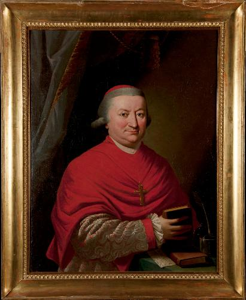
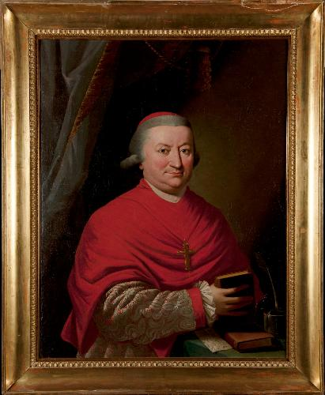

Cimeli di imprese e avventure, custoditi in uno scrigno
proteso sul lago di Como
Uno scrigno sul lago di Como
Su una penisola da cui si godono scorci incantati del Lario, questa elegante e romantica dimora del XVIII secolo e il suo stupefacente giardino hanno ospitato letterati e viaggiatori fino al suo ultimo proprietario, Guido Monzino.

1725
Cardinale Angelo Maria Durini
Fu il cardinale Angelo Maria Durini (1725-1796) a edificare il complesso sul finire del Settecento sui resti di un convento francescano del XIII secolo, di cui attualmente resta la facciata dell’antica Chiesa. Infatti, elevato al rango di cardinale presbitero da Papa Pio VI nel 1776, preferì ritirarsi a vita privata costruendo per l'occasione villa Mirabellino e successivamente nel 1787 Villa del Balbianello.
 

I primi lavori
I dispendiosi lavori del cardinale modificarono radicalmente il profilo della penisola: le balze pietrose e incolte divennero un ombroso e pittoresco giardino, la piccola insenatura fra le rocce fu trasformata in un porticciolo, dal quale, per una scaletta, si sale allo stupendo spiazzo panoramico, ombreggiato da alberi secolari e cinto da una balaustra in pietra.
La loggia
Una splendida loggia corona l’edificio principale dall’alto del promontorio. Due ampie stanze affiancano le arcate della loggia, una è occupata dalla biblioteca e l’altra era originariamente adibita a sala della musica, ma successivamente diventata stanza del cartografo, dove sono custodite una serie completa di mappe e di carte geografiche, alcune delle quali appartenute a Guido Monzino, ultimo proprietario della villa prima di essere donata al FAI.

1796
Luigi Porro Lambertenghi
Alla morte del cardinale, la villa passò al nipote Luigi Porro Lambertenghi, attivo patriota antiaustriaco che, tra i carbonari che invitò in villa, volle anche Silvio Pellico, in veste di precettore per i propri figli. Costretto ad abbandonare l’Italia, Lambertenghi vendette la proprietà all’amico Giuseppe Arconati Visconti. Con Donna Costanza, moglie del marchese, la residenza tornò ad animarsi, divenendo un importante salotto estivo, frequentato da Berchet, da Giusti e perfino da Manzoni.

1919
Il ritorno in auge
Dopo quasi quarant’anni di totale abbandono, nel 1919 la dimora venne acquistata dal generale americano Butler Ames, che la sottopose a un attento restauro. A vent’anni dalla sua scomparsa, nel 1974 gli eredi vendettero il complesso all’imprenditore Guido Monzino, appassionato esploratore e alpinista.

1974
Guido Monzino
Esponente di una delle più solide famiglie della borghesia milanese, egli si dedicò con caparbietà a una nuova opera di ristrutturazione, che interessò non solo gli edifici ma anche lo splendido giardino, cui venne conferito l’aspetto attuale.

Il giardino
Un curatissimo viale conduce, dal sagrato della piccola Chiesa (raggiungibile sia dal già citato porticciolo, sia da un elegante imbarcadero), fino alla sommità del promontorio. Grandi platani potati “a candelabro”, alternati a statue e ad annosi glicini ingentiliscono la scenografica salita, che si snoda tra ripidi tappeti erbosi, delimitati da siepi di bosso e di lauro. Sparsi nel parco si possono ammirare anche esemplari di lecci, canfore, magnolie e cipressi, oltre a splendidi cespugli di azalee e rododendri, che nella tarda stagione primaverile regalano ai visitatori straordinarie fioriture.

Gli interni
Per volere del conte Monzino, inoltre, la villa venne completamente riarredata con importanti mobili inglesi e francesi del ‘700 e del ‘800, tappeti orientali, arazzi della Manifattura di Beauvais e boiseries francesi. Oggetti di arte africana, cinese, maya e azteca, esposti in eleganti vetrine accanto a ceramiche cinesi di epoca Tang e Ming, si affiancarono a un’ampia raccolta di stampe del lago e a una delle più cospicue collezioni di dipinti su vetro oggi conosciute.


La biblioteca
Nella biblioteca della loggia egli sistemò il suo importante fondo librario dedicato alle spedizioni alpinistiche e polari, ancora oggi patrimonio di inestimabile valore per gli studiosi di queste materie.


I cimeli delle spedizioni
Nel sottotetto fece infine allestire un piccolo Museo dedicato alle sue imprese più significative: tra i tanti cimeli conservati, spicca, al centro della sala, una delle slitte trainate dai cani con cui, nel 1971, raggiunse il Polo Nord. Molte anche le immagini e i ricordi relativi alla prima ascensione italiana dell’Everest, da lui compiuta nel 1973.
1988
La donazione al FAI
Fu lo stesso Monzino, le cui ceneri sono state tumulate, per sua precisa volontà, nelle rocce dell’antica ghiacciaia del parco, a decidere di lasciare la Villa, insieme con gran parte del Dosso di Lavedo, in eredità al FAI, che dal 1988 la gestisce con cura e passione, sottoponendola a periodici interventi di manutenzione.

Affinché il FAI potesse “provvedere alla conservazione di questo centro storico-culturale, curandone la manutenzione e ogni pertinente sviluppo”, il conte Monzino dispose altresì che una munifica “dote” fosse ereditata dal FAI. Guido Monzino invitò, infine, “il FAI a mantenere sempre innalzato sul molo del Balbianello il nostro Tricolore nazionale, a ricordo di quelle bandiere che le mie Guide Alpine fecero sventolare su molti punti del mondo, per puro spirito di idealità; con modestia ma sempre con eroismo”.
Curiosità
Villa del Balbianello è un gioiello in tutti i sensi: gode di una posizione unica e privilegiata sul lago di Como, tanto da essere stata scelta anche come location per numerosi sceneggiature cinematografiche, tra cui ricordiamo Piccolo mondo antico di Mario Soldati (1941), La Certosa di Parma di Christian-Jaque (1947), Jackpot di Mario Orfini (1992), Un mese al lago di John Irvin (1995), il secondo episodio della saga Star Wars L’attacco dei cloni (2002) e Casinò Royale di Martin Campbell, film della saga di James Bond.